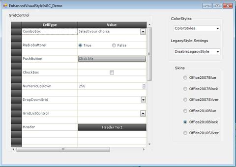

To apply enhanced visual style to the entire control, you have to enable the ColorStyle. You can enable this using the EnableLegacyStyle property. To enable the ColorStyle, set EnableLegacyStyle to false. To enable the GridVisualStyle, set this to true. By default this is set to true.
The following code illustrates how to enable ColorStyle:
|
[C#]
this.gridControl1.Model.EnableLegacyStyle = false; |
|
[VB] Me.gridControl1.Model.EnableLegacyStyle = False |
ColorStyle
You can apply one of the following skins for the control using the ColorStyle property:
· Office2003
· Office2007Blue
· Office2007Black
· Office2007Silver
· Office2010Blue
· Office2010Black
· Office2010Silver
· SystemTheme
SystemTheme is the default skin.
The following code illustrated how to customize the skin for the control:
|
[C#]
this.gridControl1.ColorStyles = Syncfusion.Windows.Forms.ColorStyles.Office2007Black; |
|
[VB]
Me.gridControl1.ColorStyles = Syncfusion.Windows.Forms.ColorStyles.Office2007Black |

Figure 488: Visual Style Office2010Black